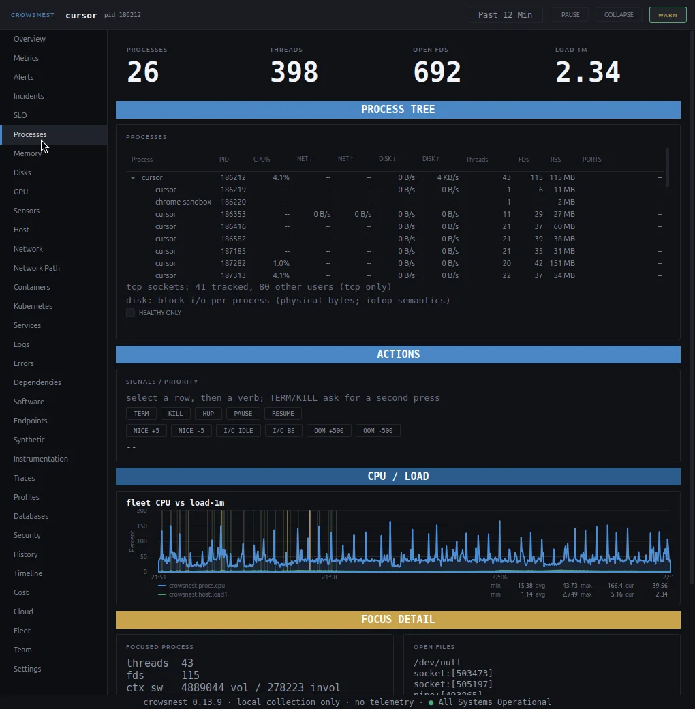
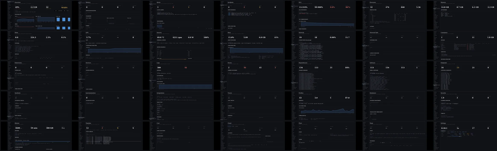

SYSTEM MONITOR / 34 VIEWS
The app in front.
The machine
under it.
One console.
Crowsnest puts the focused app's CPU, memory, threads, disk and TCP in a 430px strip. One click opens the whole machine, from the kernel to the cloud bill. Local, MIT, one binary.
$ curl -fsSL \
https://github.com/codeafridi/Crowsnest/raw/main/install.sh | sh
PLATE 02 / CONSOLE
The machine.
One click opens the same binary as a 34-view console. The process tree, the host, containers, Kubernetes, traces, the cloud bill. A live capture from the maintainer's machine, not a mock-up.


PLATE 03 / THE RELAY
The relay.
Optional shared state that outlives a closed laptop. The fleet, the incident queue, delivery and the on-call rota live on a relay you run — not on the machine that just went to sleep. It is MIT and free to self-host.
- Machines
- 100
- Seats
- 10
- Cadence floor
- 15 s
- Share links
- 25
SPEC / FREE AND MANAGED
Free app.
Relay free too.
The desktop app is the whole app: every view, no account, no telemetry, no licence check. The relay is MIT too, and free to run yourself. The $9 plan is that same relay managed by us.
Managed hosting is not open yet. Self-hosting is free today: one static binary beside Postgres, MIT, no licence check and no expiry. The $9/$90 plan and its 14-day trial apply to the managed relay when it opens.
DEPLOY / GET STARTED
One line.
No account.
Nothing starts until you do. Pick your OS, copy the line, and the installer puts crowsnest on your PATH.
$ curl -fsSL https://raw.githubusercontent.com/codeafridi/Crowsnest/main/install.sh | shInstalls for your user only and puts crowsnest on PATH. Nothing is started; run crowsnest to launch it, or re-run with --autostart to start it at login. Ubuntu, Debian, Fedora, Arch, openSUSE and other x86-64 or arm64 distros with glibc 2.34 or newer. Alpine (musl) needs a source build; the installer says so instead of installing a binary it cannot run. No curl? The installer falls back to wget, busybox, or your package manager.
Prefer a package file? The .deb and AppImage are on Releases for both x86-64 and arm64. The AppImage updates itself over zsync.
$ curl -fsSL https://raw.githubusercontent.com/codeafridi/Crowsnest/main/install.sh | shDownloads the latest DMG, copies the app into Applications and adds the crowsnest command. Nothing is started; re-run with --autostart for login autostart. Needs macOS 12 Monterey or newer. No permissions asked, and the installer clears Gatekeeper for you.
Prefer a package file? The DMG is on Releases. TCP health is gated on macOS: the kernel will not hand those counters to an unprivileged reader, and the panel says so.
PS> irm https://raw.githubusercontent.com/codeafridi/Crowsnest/main/cpp/packaging/windows/install.ps1 -OutFile "$env:TEMP\crowsnest-install.ps1"; powershell -NoProfile -ExecutionPolicy Bypass -File "$env:TEMP\crowsnest-install.ps1"Open PowerShell, paste the line, done. It downloads the installer to %TEMP% and runs that file with the execution policy bypassed for that process only — it does not pipe a remote string into your session. Installs into your user folder and puts crowsnest on PATH. Nothing is started; add -Autostart for start at login. Needs Windows 10 or newer. No Git Bash required.
Prefer a setup wizard? The MSI is on Releases. SmartScreen may ask once, choose Run anyway.
After install: crowsnest to run it, crowsnest status to check it, crowsnest stop to quit it, crowsnest update to upgrade, and crowsnest serve to run the headless collector on a display-less fleet member.
VERIFY / SIGNED MANIFEST
Every release carries a SHA256SUMS file and a Sigstore bundle. To download, check the bytes and check the publisher without installing anything:
curl -fsSLO https://raw.githubusercontent.com/codeafridi/Crowsnest/main/cpp/packaging/verify_release.sh bash verify_release.sh --all
Or use the one-liner's --verify for the checksum only (Windows -Verify). The manifest is signed keyless by the release workflow, so there is no key to fetch. The macOS/Windows installers themselves are not Apple/Microsoft-signed yet, so Gatekeeper/SmartScreen still warn once.
MANUAL / FAQ
Questions.
01Is it really free?
Yes. The desktop app is MIT with no account, no telemetry, no licence check and no feature gate. Every one of the 34 views ships in the free build. Local telemetry is never metered, and there is nothing to buy to use it.
02What is the $9 plan?
The managed relay: we run the same relay for you — hosting, TLS, upgrades, backups, mail and support. The relay is MIT and free to self-host; nothing is feature-gated. $9 a month or $90 a year, 14-day trial, no card, when managed hosting opens. Pricing and limits.
03When does the trial start?
On the managed relay, when your hosted workspace is provisioned: 14 days, no card, full limits. A relay you run yourself has no trial and no expiry — it is free, with or without us.
04What happens if I cancel, or a payment lapses?
Cancellation keeps the plan to the end of the period, then data is kept 30 days before a counted delete with a receipt. A lapsed payment gives 7 days of grace: read-only by day 7, cancelled by the pass on day 8. Restore inside the window and nothing is lost.
05Which platforms, and what is gated?
Linux, macOS and Windows from the same codebase. Collection depth differs by what each OS will hand an unprivileged process, and the console names every gap instead of showing a blank: macOS redacts TCP counters without root, Windows has no load average, cgroups and PSI pressure are Linux surfaces, per-process socket rates need Linux. What works on your OS is listed in Settings, per surface.
06What data leaves my machine?
By default, nothing. The outbound calls are all opt-in and all yours: the cloud metadata read for instance identity, your own webhook, your own Prometheus scraper, and [remote] reporting if you link a relay. Even then the payload never carries process lists, command lines, environment, paths or logs — the schema refuses them and the field list documents every byte.
07How do updates work?
crowsnest update stops the running HUD, fetches the latest release bundle and swaps it in. The AppImage updates itself over zsync, and the .deb, DMG, MSI and portable zip are on the Releases page if you prefer to install by hand.
08How does it know which app is focused?
On GNOME or KDE Wayland it uses a small bridge the installer sets up, or crowsnest focus-bridge if it needs reinstalling. Hyprland, Sway, niri and X11 use their own sources; any other Wayland compositor has no focus source, and the strip says NO FOCUS while the host, disk and network cards keep collecting. The strip's PIN holds the current app when focus moves, and Settings -> Collection -> FOCUS names the live provider or the next step. The focus reference has every case.